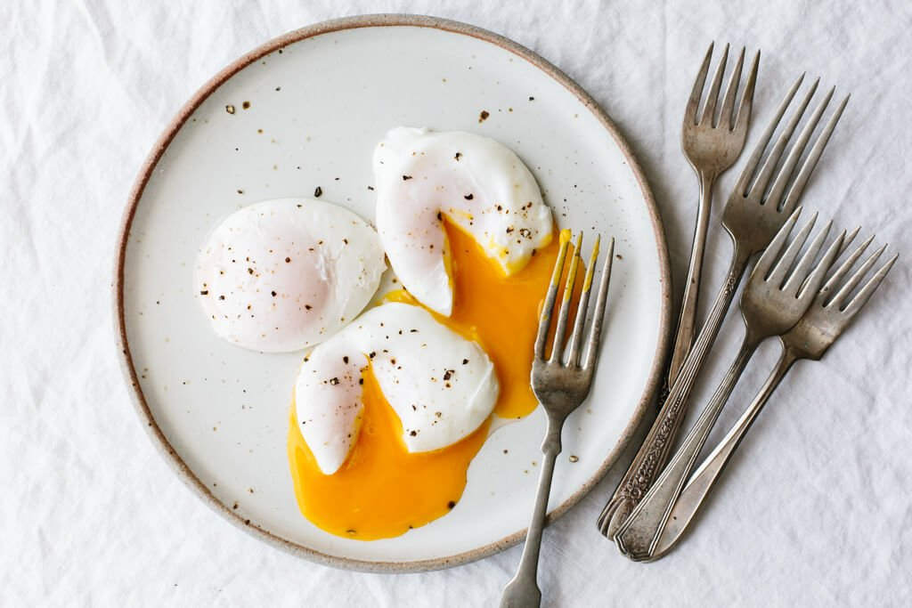

poached egg:

Lasagna ingredients:
Poached egg recipe:
- Bring a large pot of water to a boil, then reduce to low (or turn off the heat).
- Crack the egg in a fine mesh sieve (over a small bowl) and remove the liquidy whites.
- Transfer the egg to a small ramekin or bowl.
- Add one tablespoon of light-colored vinegar to the pot and stir to create a vortex.
- Pour the ramekin with the egg into the middle of the vortex and set a timer for 3 minutes.
- Once the egg is done, use a slotted spoon to remove the poached egg. Dab with a paper towel to remove excess water and eat immediately.